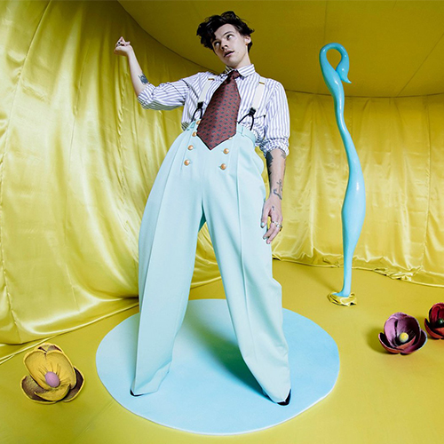
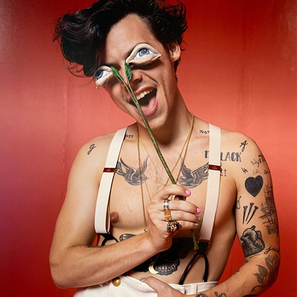

Luego de su esperado álbum debut lanzado en mayo de 2017, Harry Styles vuelve a sorprendernos con su más reciente álbum de estudio “Fine Line”, el cual anticipó con su single Lights Up y nos dejó sedientos de más con su cambio de estilo que daría el primer paso dentro de este nuevo y brillante universo que experimentó en su nuevo material.
Influenciado por sus artistas favoritos tales como la mítica banda de los 70’ Fleetwood Mac, Queen y David Bowie, el artista nacido en Manchester nos muestra una nueva faceta de él que experimenta con los sonidos y se divierte en sus canciones, dirigiéndose hacia nueva dirección en la que juega con sus sentimientos y la sexualidad a través del álbum. “Es sobre tener sexo y estar triste”, de esta forma lo describió Harry en una entrevista con la revista Rolling Stone para sumergirnos en este universo —con isla incluida— que nos entrega en 46 minutos, llenos de honestidad y el balance perfecto de estilos musicales que demuestran la versatilidad del cantante de 27 años, pero sin nunca perder su esencia retro-rock que nos mostró desde el inicio de su carrera solista.
El álbum incluye sus singles más recientes, como Golden, Watermelon Sugar, Adore You y Falling que, más allá de actualmente formar parte del nuevo pop al ser escuchadas en todos lados hasta el cansancio, cuentan con la impronta de Harry, en complemento con sus respectivos videos que muestran su juego con la ropa y su característico estilo influenciado por la moda de los años 70, mientras corre por las calles de Italia, recorre una isla ficticia con su amigo pez o se ahoga en lo que podrían ser sus propias lágrimas. Además de sus pegajosos singles que le valieron las posiciones más altas en los charts, nos encontramos con Treat People With Kindness, que se asemeja a un coro góspel y muestra la seguridad del cantante para salir de su zona de confort y nutrirse con cada género musical habido y por haber. También podemos encontrar este sonido experimental en canciones como Sunflower, Vol 6. y Canyon Moon, que definen que Harry llegó para quedarse y jugar con los sonidos que llegan a sus manos llenas de anillos.
Fuera de toda canción bailable, nos encontramos con “Cherry”, una balada melancólica que muestra a un Harry vulnerable y destrozado luego de una ruptura. Su sonido es suave y sencillo, lo cual contrasta con la letra que, en su coro, dice “no lo llames ‘bebé’”, siendo su visión de la nueva relación de su ex-amada con alguien más. Pero este no es el único momento de vulnerabilidad dentro del álbum; en Falling nos encontramos con un Harry roto que se reprocha por lo sucedido y teme por la persona en que se convirtió.
Mientras más nos sumergimos, podemos notar cada vez más la gran influencia de sus ídolos en canciones como She y Fine Line, con grandes, pero armoniosos, solos de instrumentos que le dan una vibra a David Bowie que agigántese sus canciones y las vuelve icónicas e inolvidables, con su sonido influenciado por el rock que tanto ama.
Cada canción nos muestra el camino de una relación, sus partes rosas y los matices: nos deja ver a un Harry con sentimientos y listo para darnos mucha más música en este camino que apenas empieza a trazar, en el que experimenta pero sin nunca perder el sonido y la estética que tanto lo identifica. “Fine Line” tiene el balance perfecto para bailar, cantar a todo pulmón y derramar algunas lágrimas. Esto es tan solo una probada del estilo de Harry y lo que tiene para ofrecer con su universo musical lleno de moda setentera y grandes influencias.